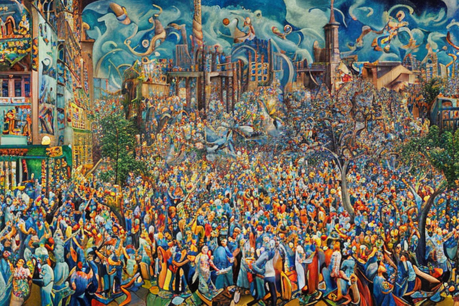

Ο σερίφης και η κρυπτογραφία δημοσίου κλειδιού
Αρχική Σελίδα
Πίνακας Περιεχομένων
Ο άγνωστος εχθρός

Έχετε πάει ποτέ στους σκονισμένους δρόμους του Κάνσας, όπου ο ήλιος λούζει τις καλλιέργειες και ο αέρας είναι πυκνός από την οσμή του χώματος και του ιδρώτα; Λοιπόν, εκεί διαδραματίζεται η ιστορία μας.
Ο σερίφης Χανκ ήταν ένας τραχύς και σκληρός τύπος, με ροζιασμένα χέρια και άγρια φωνή που μπορούσε να τρομάξει ακόμα και τους πιο σκληροτράχηλους εγκληματίες. Γνώριζε κάθε εκατοστό της επικράτειάς του σαν την παλάμη του χεριού του και επέβαλε την ειρήνη με το βαρύ του χέρι.
Μια μέρα, ένας άγνωστος ήρθε στην πόλη. Δεν ανήκε σε κανένα κοινωνικό γράφημα, κάτι που τον έκανε λίγο περίεργο. Στη σημερινή εποχή, όλοι ήταν συνδεδεμένοι με κάποιο τρόπο, είτε μέσω Facebook, Instagram ή Twitter. Αλλά αυτός ο τύπος; Δεν είχε ούτε έναν φίλο στο διαδίκτυο. Ούτε μία επευφήμηση, ούτε ένα σχόλιο, τίποτα.
Ο σερίφης Χανκ παρατήρησε αμέσως τον άγνωστο. Δεν εμπιστευόταν ανθρώπους που δεν είχαν καμία διαδικτυακή παρουσία. Πώς είναι μέρος της κοινωνίας αν δεν είχαν θέση στο κοινωνικό γράφημα; Ήταν απλά ύποπτο.
Ο άγνωστος, που αποκαλούσε τον εαυτό του Τζακ, δεν φαινόταν να τον νοιάζει που ήταν εξωδιαδικτυακός. Περπατούσε στην πόλη με ένα χαμόγελο στα χείλη, κατεβάζοντας το καπέλο του στους ντόπιους και θαυμάζοντας τις καλλιέργειες στα χωράφια.
Ο σερίφης Χανκ αποφάσισε να ερευνήσει. Μπήκε στο διαδίκτυο και άρχισε να ερευνά. Ξεσκόνισε κάθε πλατφόρμα κοινωνικής δικτύωσης, κάθε αρθρογραφία, κάθε ομάδα συζητήσεων. Αλλά δεν υπήρχε τίποτα. Ούτε μια αναφορά στον Τζακ. Σαν να μην υπήρχε.
Εν τω μεταξύ, περίεργα πράγματα συνέβαιναν στον νομό. Οι καλλιέργειες ξεραίνονταν, τα ζώα εξαφανίζονταν και οι άνθρωποι αρρώσταιναν. Ήταν σαν να έπεσε μια κατάρα πάνω στη γη.
Ο σερίφης Χανκ άρχισε να υποψιάζεται ότι ο Τζακ είχε κάποια σχέση με αυτό. Αλλά δεν μπορούσε να αποδείξει τίποτα. Δεν είχε κανένα στοιχείο, καμία ανάρτηση στα μέσα κοινωνικής δικτύωσης που να τον συνδέουν με τα εγκλήματα.
Έτσι, ο σερίφης Χανκ αποφάσισε να πάρει την κατάσταση στα χέρια του. Αντιμετώπισε τον Τζακ, ρωτώντας τον αδιάφορα τι έκανε στην πόλη τους. Ο Τζακ απλώς χαμογέλασε και κατέβασε ξανά το καπέλο του.
“Απλά περαστικός είμαι”, είπε. “Δεν έγινε τίποτα κακό.”
Αλλά ο σερίφης Χανκ δεν ήταν ικανοποιημένος. Ήξερε ότι αυτός ο άγνωστος έκρυβε κάτι. Οι δυο τους άρχισαν να μαλώνουν, κυλώντας σαν δύο γουρούνια στο χώμα. Ήταν μία μακρά πάλη, αλλά τελικά, ο σερίφης Χανκ βγήκε νικητής.
Έδεσε με χειροπέδες στον Τζακ και τον πέταξε στο πίσω μέρος του αυτοκινήτου, έτοιμος να τον οδηγήσει στη φυλακή.
Αλλά καθώς έφευγαν από την πόλη, ο σερίφης Χανκ δεν μπορούσε να διώξει την αίσθηση ότι κάτι δεν πήγαινε καλά. Ο Τζακ ήταν πολύ ήρεμος, πολύ συγκεντρωμένος.
Και μετά το κατάλαβε. Ο Τζακ δεν ανήκε σε κανένα κοινωνικό γράφημα επειδή δεν ήταν άνθρωπος. Ήταν ένας δαίμονας, που εστάλη για να προκαλέσει τον όλεθρο στην πόλη και τους ανθρώπους της. Ήξερε ότι δεν μπορούσε να τον αφήσει να πάει οπουδήποτε θέλει, διαφορετικά η καταστροφή της πόλης ήταν αναπόφευκτη. Τον έβαλε σε ένα κελί για να είναι σίγουρος.
Τελικά οι καλλιέργειες άρχισαν να μεγαλώνουν ξανά, τα ζώα επέστρεψαν και οι άνθρωποι δεν ήταν πια άρρωστοι. Ο σερίφης Χανκ ήξερε ότι είχε σώσει την πόλη του από μια τρομερή μοίρα.
Η ψηφιακή ταυτότητα

Ο σερίφης Χανκ ήξερε ότι χρειαζόταν περισσότερες πληροφορίες για τον Τζακ. Είχε μια προαίσθηση ότι ο δαίμονας ήταν συνδεδεμένος με κάποιο ξεχασμένο κοινωνικό γράφημα, ένα γράφημα προσβάσιμο μόνο μέσω ενός ιδιωτικού κλειδιού κρυπτογραφίας.
Επέστρεψε στο σεριφικό τμήμα και άναψε τον υπολογιστή του. Ως έμπειρος σερίφης, γνώριζε τον ψηφιακό κόσμο, αλλά δεν είχε ασχοληθεί ποτέ με την κρυπτογραφία στο παρελθόν.
Άρχισε να ερευνά, βουτώντας στον κόσμο της κρυπτογραφίας δημόσιου κλειδιού. Έμαθε πώς τα ιδιωτικά κλειδιά και τα δημόσια κλειδιά συνεργάζονταν για να δημιουργήσουν ένα ασφαλές κανάλι επικοινωνίας, ένα κανάλι αδύνατον να υποκλαπεί ή να παραβιαστεί.
Καθώς ενεβάθυνε, συνειδητοποίησε ότι οι πιστοποιήσεις μέσων κοινωνικής δικτύωσης συνδέονται με την κρυπτογράφηση δημόσιου κλειδιού. Χρησιμοποιούνται για την επαλήθευση της ταυτότητας ενός ατόμου και τη διασφάλιση ότι η παρουσία του στο διαδίκτυο ήταν αληθής. Εάν ο Τζακ είχε μια πιστοποίηση, ήταν το κλειδί για την απόδειξη της ταυτότητάς του.
Ο σερίφης Χανκ ήξερε ότι έπρεπε να αντλήσει πληροφορίες από τον Τζακ, για να δει αν κατείχε τέτοιες πιστοποιήσεις. Επέστρεψε στο κελί κράτησης και κάθισε απέναντι απ’τον δαίμονα.
“Τζακ”, είπε, “Θέλω να μου δώσεις κάποιες πληροφορίες. Έχεις πιστοποιήσεις μέσων κοινωνικής δικτύωσης;”
Ο Τζακ χαμογέλασε. “Γιατί θα χρειαζόμουν μια πιστοποίηση; Δεν με νοιάζει το κοινωνικό γράφημα.”
Ο σερίφης Χανκ αναστέναξε. Ήξερε ότι έπρεπε να πείσει τον Τζακ ότι ήταν προς το συμφέρον του να συνεργαστεί.
“Άκου, Τζακ. Εάν έχεις μια πιστοποίηση, θα αποδείξει ότι δεν είσαι απλώς ένας τυχαίος δαίμονας. Θα σου δώσει αξιοπιστία, θα σε διευκολύνει να περιηγηθείς στον διαδικτυακό κόσμο.”
Ο Τζακ ανασήκωσε το ένα φρύδι. “Και εγώ τι θα κερδίσω;”
Ο σερίφης Χανκ σκέφτηκε για μια στιγμή. “Λοιπόν, αν μου δώσεις τις πληροφορίες που χρειάζομαι, μπορώ να βεβαιωθώ ότι δεν θα πάθεις κακό. Μπορώ να σε προστατέψω από τους άλλους δαίμονες που μπορεί να προσπαθήσουν να σε εκμεταλλευτούν.”
Ο Τζακ το σκέφτηκε για μια στιγμή. “Εντάξει, σερίφη. Θα σου πω ότι επιθυμείς να γνωρίζεις. Αλλά πρέπει να μου υποσχεθείς ότι είμαι ασφαλής.”
Ο σερίφης Χανκ έγνεψε καταφατικά. “Το υπόσχομαι.”
Στη συνέχεια, ο Τζακ προχώρησε στην αποκάλυψη του ιδιωτικού κλειδιού κρυπτογράφησης, του κλειδιού ενός ξεχασμένου κοινωνικού γραφήματος στο οποίο κανείς άλλος δεν είχε πρόσβαση. Ο σερίφης Χανκ χρησιμοποίησε το κλειδί για να συνδεθεί στον ιστότοπο κοινωνικής δικτύωσης και πράγματι η πιστοποίηση του Τζακ ήταν εμφανέστατη. Ήταν ένα σημάδι αυθεντικότητας, απόδειξη ότι ήταν αυτός που έλεγε.
Ο σερίφης Χανκ δεν μπορούσε να πιστέψει την τύχη του. Είχε βρει τα στοιχεία που χρειαζόταν για να αποδείξει την ταυτότητα του Τζακ, όλα χάρη στις γνώσεις του για την κρυπτογραφία δημόσιου κλειδιού.
Καθώς έφευγε από το κελί κράτησης, δεν μπορούσε να μην σκεφτεί πόσο σημαντική ήταν η κρυπτογραφία στην ψηφιακή εποχή. Ήταν το κλειδί για το ξεκλείδωμα των μυστικών του διαδικτυακού κόσμου, το εργαλείο που επέτρεπε στους ανθρώπους να επικοινωνούν με ασφάλεια και να επαληθεύουν την ταυτότητά τους.
Η ιδιωτικότητα και ασφάλεια

Ο σερίφης Χανκ ήξερε ότι έπρεπε να πάει τα πράγματα ένα βήμα παραπέρα. Ήθελε να διασφαλίσει ότι ο Τζακ είχε μια επαληθεύσιμη διαδικτυακή ταυτότητα, αλλά ήθελε επίσης να βεβαιωθεί ότι το πραγματικό όνομα του Τζακ παρέμενε κρυφό. Χρησιμοποίησε ένα άλλο εργαλείο στο ψηφιακό του οπλοστάσιο, την κρυπτογράφηση ECDSA.
Χρησιμοποιώντας κρυπτογράφηση ECDSA, ο σερίφης Χανκ μπόρεσε να δημιουργήσει μια σειρά από θυγατρικές ταυτότητες για τον Τζακ, καθεμία από τις οποίες ήταν συνδεδεμένη με το ιδιωτικό του κλειδί αλλά όχι με το πραγματικό του όνομα. Αυτές οι ταυτότητες επέτρεπαν στον Τζακ να χρησιμοποιεί διαφορετικά ονόματα χρήστη και ψευδώνυμα στο διαδίκτυο, αποδεικνύοντας ταυτόχρονα ότι ήταν το ίδιο άτομο.
Ο σερίφης Χανκ εξήγησε το σχέδιο στον Τζακ, ο οποίος φαινόταν εντυπωσιασμένος από την τεχνολογία. “Δηλαδή λές ότι μπορώ να έχω πολλαπλές ταυτότητες στο διαδίκτυο, αλλά να αποδεικνύω ότι είμαι εγώ;”
“Έτσι είναι”, είπε ο σερίφης Χανκ. “Με αυτήν την κρυπτογράφηση, μπορούμε να δημιουργήσουμε ένα σύστημα που σου επιτρέπει να έχεις το απόρρητό σου και την ασφάλειά σου ταυτόχρονα.”
Ο Τζακ έγνεψε καταφατικά. “Εντάξει, είμαι μέσα”.
Ο σερίφης Χανκ άρχισε να δουλεύει, δημιουργώντας ένα σύνολο κρυπτογραφημένων ταυτοτήτων για τον Τζακ. Κάθε ταυτότητα συνδέθηκε με το ιδιωτικό του κλειδί, αλλά όχι με το πραγματικό του όνομα. Αυτό σήμαινε ότι ο Τζακ μπορούσε να χρησιμοποιήσει διαφορετικά ονόματα στο διαδίκτυο, αποδεικνύοντας ταυτόχρονα ότι ήταν το ίδιο άτομο.
Ο Τζακ ενθουσιάστηκε με τα αποτελέσματα. Μπόρεσε να συνδεθεί στους διάφορους λογαριασμούς του στα μέσα κοινωνικής δικτύωσης χρησιμοποιώντας τις διαφορετικές ταυτότητές του, κρατώντας ταυτόχρονα το πραγματικό του όνομα κρυμμένο από τα αδιάκριτα βλέμματα.
Αλλά υπήρχε ένα πρόβλημα, μόνο ο σερίφης Χανκ γνώριζε το πραγματικό όνομα του Τζακ. Η κρυπτογράφηση ήταν τόσο ασφαλής που ούτε ο Τζακ δεν μπορούσε να έχει πρόσβαση στο πραγματικό του όνομα. Αυτό σήμαινε ότι ο σερίφης Χανκ είχε τον απόλυτο έλεγχο της διαδικτυακής ταυτότητας του Τζακ.
Στην αρχή, ο Τζακ ήταν διστακτικός σχετικά με αυτή τη ρύθμιση. “Τι γίνεται αν κάνεις κατάχρηση των πληροφοριών μου;” ρώτησε.
Ο σερίφης Χανκ κούνησε το κεφάλι του. “Υπόσχομαι να χρησιμοποιήσω αυτές τις πληροφορίες μόνο για το καλό της πόλης. Δεν θα αποκαλύψω το πραγματικό σου όνομα σε κανέναν άλλον και θα χρησιμοποιήσω τις διαδικτυακές σας ταυτότητες μόνο για σκοπούς επιβολής του νόμου.”
Ο Τζακ έγνεψε, ικανοποιημένος με την εξήγηση. “Εντάξει, σε εμπιστεύομαι”.
Και έτσι ήταν που ο Τζακ κυκλοφορούσε στον διαδικτυακό κόσμο, χρησιμοποιώντας τις διάφορες ταυτότητές του για να περιηγηθεί στο ψηφιακό τοπίο. Μπόρεσε να αποδείξει την ταυτότητά του χωρίς να αποκαλύψει το πραγματικό του όνομα, όλα χάρη στη γνώση του σερίφη Χανκ για την κρυπτογράφηση ECDSA.
Το αναδυόμενο τοπίο των αμετάβλητων δεδομένων
Καθώς περνούσε ο καιρός, οι νέοι της πόλης άρχισαν να χάνουν την πίστη στις μεθόδους του Σερίφη Χανκ. Δεν του εμπιστεύονταν πλέον τις πληροφορίες τους και, αντ’ αυτού, στράφηκαν σε μια νέα τεχνολογία, το ηλεκτρονικό χρήμα.
Το ηλεκτρονικό χρήμα ήταν ένα επαναστατικό νέο εργαλείο που επέτρεπε την ασφαλή και αμετάβλητη αποθήκευση πληροφοριών. Σε αντίθεση με τα όπλα και το κυνηγετικό όπλο του Σερίφη Χανκ, που θα μπορούσαν να κλαπούν ή να καταστραφούν, το ηλεκτρονικό χρήμα ήταν αδιάβλητο σε κάθε επίθεση.
Οι νέοι της πόλης άρχισαν να αποθηκεύουν τις προσωπικές τους πληροφορίες στο ηλεκτρονικό χρήμα, βέβαιοι ότι θα παραμείνουν ασφαλείς. Ήξεραν ότι ακόμα κι αν ο σερίφης Χανκ προσπαθούσε να αποκτήσει πρόσβαση στα δεδομένα τους, δεν θα μπορούσε να το κάνει χωρίς την άδειά τους.
Ο σερίφης Χανκ έμεινε άναυδος από αυτή τη νέα εξέλιξη. Πάντα πίστευε ότι οι μέθοδοί του ήταν οι καλύτεροι για να κρατήσει την πόλη ασφαλή. Αλλά τώρα, φαινόταν ότι το μέλλον ανήκε σε μια νέα γενιά τεχνολογίας, που δεν καταλάβαινε πλήρως.
Προσπάθησε να μάθει περισσότερα για το ηλεκτρονικό χρήμα, αλλά δυσκολεύτηκε να κατανοήσει την πολυπλοκότητά του. Κάθε φορά που νόμιζε ότι το κατανοούσε, αποκαλύπτοταν άλλο ένα στρώμα ωρολογίας και λεπτομέρειας δεν γνώριζε.
Τελικά, ο σερίφης Χανκ συνειδητοποίησε ότι έπρεπε να προσαρμοστεί στους καιρούς που αλλάζουν. Δεν μπορούσε πλέον να βασίζεται αποκλειστικά στα όπλα του και στο κυνηγετικό του όπλο. Έπρεπε να μάθει να χρησιμοποιεί τα νέα εργαλεία, ακόμα κι αν φαίνονταν ξένα και εκφοβιστικά.
Και έτσι άρχισε να μελετά το ηλεκτρονικό χρήμα, βυθίζοντας τον εαυτό του στις περιπλοκές του και μαθαίνοντας ό,τι μπορούσε για τις δυνατότητές του. Διάβαζε μακροσκελή άρθρα και παρακολουθούσε συνέδρια, αποφασισμένος να γίνει ειδικός σε αυτή τη νέα τεχνολογία.
Καθώς μάθαινε περί του ηλεκτρονικού χρήματος, ο σερίφης Χανκ άρχισε να διαβλέπει καινούργιες δυνατότητές. Συνειδητοποίησε ότι μπορούσε να χρησιμοποιηθεί όχι μόνο για την αποθήκευση προσωπικών πληροφοριών, αλλά και για τη δημιουργία ενός πιο διαφανούς και ασφαλούς συστήματος διακυβέρνησης για την πόλη.
Πρότεινε ένα σχέδιο στο δημοτικό συμβούλιο, περιγράφοντας πώς θα μπορούσε να χρησιμοποιηθεί το ηλεκτρονικό χρήμα για την καταγραφή των πάντων, από την καταχώρηση ιδιοκτησίας μέχρι τα αρχεία ψηφοφορίας. Το συμβούλιο ήταν δύσπιστο στην αρχή, αλλά καθώς ο σερίφης Χανκ εξήγησε τα οφέλη του ηλεκτρονικού χρήματος με εξαντλητικές λεπτομέρειες, άρχισαν να προσεγγίζουν τον τρόπο σκέψης του.
Και έτσι ήταν που η πόλη του Ρίτζβιλ έγινε πρωτοπόρος στη χρήση της τεχνολογίας ηλεκτρονικού χρήματος για διακυβέρνηση. Ο σερίφης Χανκ ήταν η κινητήρια δύναμη πίσω από την αλλαγή και η νεολαία της πόλης άρχισε να τον σέβεται για άλλη μια φορά για την προθυμία του να προσαρμοστεί και να εξελιχθεί με την εποχή.
Ο σερίφης και η τεχνολογική μετάβαση

Καθώς ο σερίφης Χανκ προσαρμόστηκε στους καιρούς που αλλάζουν, βρήκε τον εαυτό του να χρησιμοποιεί τα όπλα και το κυνηγετικό του τουφέκι ολοένα και λιγότερο. Είχαν καταστεί παρωχημένα μπροστά στο ηλεκτρονικό χρήμα, το οποίο παρείχε έναν πιο ασφαλή τρόπο αποθήκευσης και επαλήθευσης των δημόσιων πληροφοριών.
Πέρασαν οι μέρες που χρειαζόταν να βασιστεί στη βία και τον εκφοβισμό για να κρατήσει την πόλη ασφαλή. Τώρα, θα μπορούσε να χρησιμοποιήσει τη δύναμη του ηλεκτρονικού χρήματος για να διασφαλίσει ότι οι δημόσιες ταυτότητες και οι πιστοποιήσεις όλων ήταν ασφαλείς και επαληθεύσιμες.
Συνεργάστηκε στενά με το τμήμα πληροφορικής της πόλης για την ανάπτυξη ενός συστήματος δημόσιων ταυτοτήτων που ήταν αποθηκευμένες στο ηλεκτρονικό χρήμα. Αυτές οι ταυτότητες περιλάμβαναν τα πάντα, από τις άδειες οδήγησης μέχρι τα πιστοποιητικά γέννησης και συνδέονταν με το ιδιωτικό κλειδί κάθε ατόμου.
Αυτό σήμαινε ότι όποιος ήθελε να επαληθεύσει την ταυτότητα κάποιου μπορούσε να το κάνει εύκολα, χωρίς να χρειάζεται φυσική ταυτότητα ή πρόσωπο με πρόσωπο συνάντηση. Το μόνο που έπρεπε να κάνουν ήταν να ελέγξουν το δημόσιο κλειδί του ατόμου στο ηλεκτρονικό χρήμα και να επαληθεύσουν ότι ταιριάζει με το ιδιωτικό του κλειδί.
Οι πιστοποιήσεις αποθηκεύτηκαν επίσης στο ηλεκτρονικό χρήμα, διασφαλίζοντας ότι όποιος ισχυριζόταν ότι είχε μια συγκεκριμένη ικανότητα ή προσόν θα μπορούσε να το αποδείξει εύκολα και με ασφάλεια. Αυτό ήταν ιδιαίτερα σημαντικό για εργασίες που απαιτούσαν ειδική κατάρτιση, όπως γιατροί ή ηλεκτρολόγοι.
Το ηλεκτρονικό χρήμα κατέστησε αδύνατο για οποιονδήποτε να παραποιήσει τη δημόσια ταυτότητα ή τις πιστοποίησεις, καθώς όλα τα αρχεία ήταν επαληθευμένα και αμετάβλητα. Αυτό σήμαινε ότι τα όπλα και τα κυνηγετικά όπλα στα οποία βασιζόταν ο σερίφης Χανκ δεν ήταν πλέον απαραίτητα για τη διατήρηση της ασφάλειας των δημοσίων πληροφοριών.
Αντίθετα, περνούσε τις μέρες του πυροβολώντας πουλιά και περιπολώντας την πόλη με πιο ειρηνικό και ασφαλή τρόπο. Ήταν περήφανος που συμμετείχε στην επανάσταση στην τεχνολογία που το είχε κάνει αυτό δυνατό και ήξερε ότι η πόλη του Ρίτζβιλ ήταν πλέον ένα πιο ασφαλές και ειρηνικό μέρος εξαιτίας της.
Καθόταν στη βεράντα του στο τέλος μιας κουραστικής μέρας και βλέποντας τον ήλιο να δύει πάνω από τα χωράφια, ο σερίφης Χανκ συλλογίστηκε τις αλλαγές που είχαν συμβεί στη ζωή του. Ήξερε ότι θα υπήρχαν πάντα νέες προκλήσεις και νέες τεχνολογίες, και ήταν σίγουρος ότι θα μπορούσε να προσαρμοστεί σε ό,τι κι αν έκρυβε αυτό το μέλλον.
Προς το παρόν, όμως, αρκέστηκε στο να απολαμβάνει την ειρήνη και την ασφάλεια που είχε φέρει το ηλεκτρονικό χρήμα στην πόλη του και να ξέρει ότι είχε παίξει ρόλο στο να γίνουν όλα δυνατά.